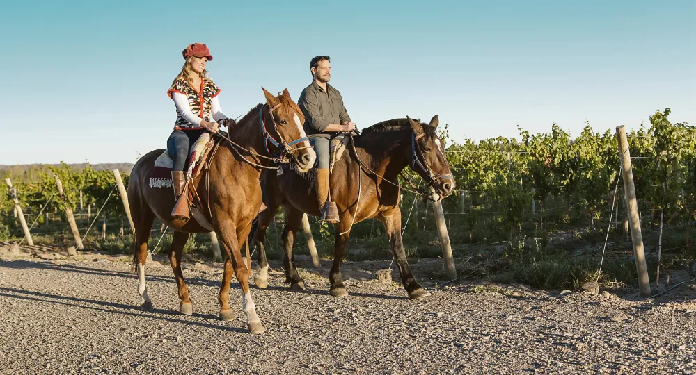

Mendoza es una ciudad de la región de Cuyo en Argentina y es el corazón de la zona vitivinícola argentina, famosa por sus Malbecs y otros vinos tintos. Sus distintas bodegas ofrecen degustaciones y visitas guiadas. La ciudad tiene calles amplias y frondosas rodeadas de edificios modernos y art déco, y con plazas más pequeñas que rodean la Plaza Independencia, sitio del Museo Municipal de Arte Moderno subterráneo, que exhibe arte moderno y contemporáneo.
